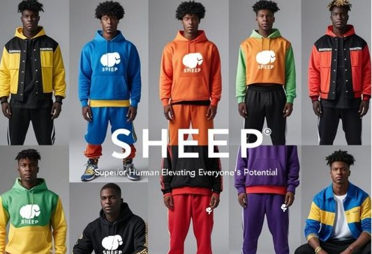
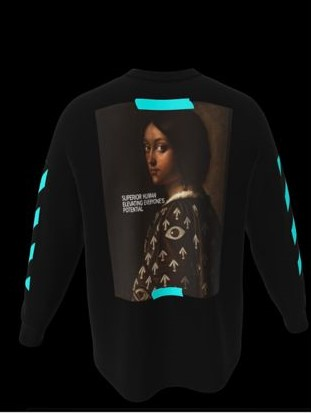

In a world where style is often just about looking good, SHEEP dares to be different. It's not just another streetwear label—it's a bold declaration, stitched into cotton and culture. With a name that flips the narrative on its head, SHEEP stands for Superior Human Elevating Everyone's Potential—a mission, a mindset, and a movement.
Born from the streets, inspired by purpose, and designed for elevation, SHEEP is where fashion meets inner greatness.
"True strength is quiet. Real power lifts others. SHEEP isn't meek, it's mighty."
Flipping the Script
Traditionally, the word "sheep" evokes images of conformity, of blindly following the herd. But this brand reclaims and redefines it. In the SHEEP universe, to be a sheep is to be superior not above others, but within yourself. It's about elevation—lifting yourself while pulling others up with you.
Every hoodie, tee, or cap isn't just a fit; it's a conversation starter, a mindset check. It says: I see greatness in myself, and I see it in you too.
The SHEEP Philosophy
The mission behind SHEEP is rooted in one idea: potential is collective. True elevation isn't about one person winning—it's about the whole crew rising together. Whether you're on the come-up in tech, music, art, or just figuring life out, SHEEP is your armor and anthem.
"We want people to wear purpose," says the founder. "Not just wear us for the look, but for what it represents: self-awareness, community, and unstoppable growth."
SHEEP Is the New Roar
In a world chasing clout, SHEEP is chasing calling. It's not here to follow trends. It's here to start waves. For every superior human out there quietly grinding, growing, and elevating, this brand was made for you.
So the next time you throw on a SHEEP hoodie, remember: you're not just wearing a name—you're wearing a purpose.
Welcome to SHEEP
Welcome to SHEEP where streetwear meets purpose, and fashion becomes a movement. This isn't just a collection; it's a call to action. SHEEP stands for Superior Human Elevating Everyone's Potential, and it's designed to remind you: you're not just wearing clothes, you're wearing a mindset.
Created in collaboration with Unfold, SHEEP is our way of sparking change, of inspiring you to unlock the potential within yourself and those around you. It's about creating a ripple effect of growth, empowerment, and community. Imagine a world where every interaction is a chance to lift someone up, where style meets substance, and where everyone has the tools to be their best selves.
That's the world SHEEP is building. From bold puffer jackets to gender-fluid vests, every piece is a statement: you are a leader, a visionary, a SHEEP So, are you ready to join the movement? To elevate, to inspire, to unlock the extraordinary in the ordinary? Wear SHEEP Be the hero. Change the game.